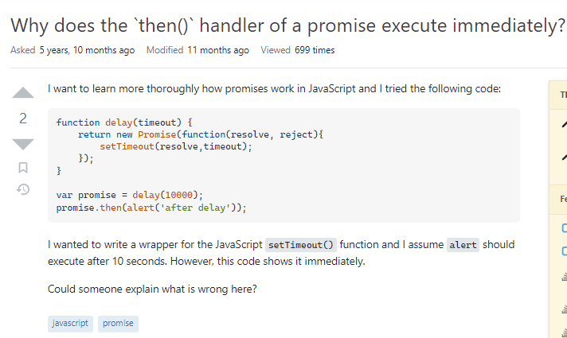

StackOverflow is Your Best Friend!
26 Jan 2023
What is StackOverflow?
In the world of programming, StackOverflow is your biggest friend. If you have ever asked Google a programming question, StackOverflow is likely the first result. It is a place where you can ask programming questions on how to debug your code and get answers from other coders around the world. When your coding gets difficult and you have hit a dead end, you can turn to StackOverflow. When you want to ask for suggestions on how to approach your problem, you can turn to StackOverflow. It will always be there for you. StackOverflow is the largest forum for finding answers to your coding issues and it also contains everything about computer science. It’s so huge, that someone probably has asked the same exact question you were planning on asking. For many professional programmers, it is a place they often visit to help them accomplish their job. If you are wondering why ChatGPT is so great at answering your programming question, it is all thanks to the data ChatGPT trained on from StackOverflow. Although StackOverflow is a great place to ask and find answers related to code, there is still a learning curve to climb.
A toxic community
Like any online community, StackOverflow can be a toxic environment. Oftentimes when you ask a wrong, bad, or even a dumb question, you will find yourself either facing rude comments, your post gets extremely downvoted, or your entire post gets deleted. Other times, you will find terrible solutions to your question, ones that even you would never write. For most new users to StackOverflow, those are the problems they face when they ask their first question. Eric Raymond’s “How to Ask Questions The Smart Way” is a great guideline for asking questions on StackOverflow. His essay contains not only how to ask questions, but also how to interpret answers. Some of the most important principles in Raymond’s “How to Ask Questions The Smart Way” are:
- Use meaningful, specific subject headers
- Write in clear, grammatical, correctly-spelled language
- Send questions in accessible, standard formats
- Be precise and informative about your problem
- Volume is not precision
- Describe your problem’s symptoms, not your guesses
- Describe the goal, not the step
- Be explicit about your question
Let’s apply Raymond’s principles of asking questions the smart way to some real examples of StackOverflow questions.
A SMART question

This StackOverflow post is “Why does the ‘then()’ handler of a promise execute immediately?” In this question, the user provided a block of code, the goal of the code, and what went wrong. At the end of the StackOverflow post, he reiterates his question, asking “could someone explain what is wrong here?” Let us analyze this question using Raymond’s principles of asking smart questions. First is, “use meaningful, specific subject headers.” This user is off to a great start with their subject header, “Why does the ‘then()’ handler of a promise execute immediately?” The title of the post has enough information to give a brief summary of the issue at hand. Reading it, you know that this user is having trouble with promises, more specifically, the ‘then()’ handler executes immediately rather than waiting for the promise. In addition, StackOverflow allows you to add keyword tags to your post that users can search by. In this post, it is tagged with “javascript” and “promises,” allowing StackOverflow’s search algorithm to sort by “javascript” or “promises.” Next, the principle, “Write in clear, grammatical, correctly-spelled language,” is clearly fulfilled with their use of commas and periods. “Send questions in accessible, standard formats” is true because the user provides a block of code. Next, “be precise and informative about your problem” and “volume is not precision” goes hand-in-hand. This user is most definitely precise and informative about their problem, providing a code block, the goal of their code, initial assumptions, and what went wrong, while keeping it all short and concise. As explained before, the principles:
- Describe your problem’s symptoms, not your guesses
- Describe the goal, not the step
- Be explicit about your question
are all satisfied. Overall, this question on StackOverflow is a prime example of asking a smart question and others should follow their framework.
A not so smart question

Moving on to this StackOverflow post titled, “Remove existing data from localStorage on browser crash.” This user writes three paragraphs without any code to supplement this question. I think you can see where this is going. Starting with the “use meaningful, specific subject headers,” this person uses a detailed title that gives a brief overview of their goal, to remove data from localStorage once the browser crashes. This user also uses the tags: “javascript, request, local-storage, and service-worker.” These are great tags to help the post to be found, especially searching for “javascript” and “local-storage.” The next principle, “write in clear, grammatical, correctly-spelled language,” is also fulfilled. This user properly makes use of commas, periods, parentheses, and all grammar. “Send questions in accessible, standard formats,” is not true in this StackOverflow post. The user does not provide any code block but they do provide a link to another webpage to view the code. Although a link to someone else’s code on a webpage is given, it is not clear what changes the user has made. “Be precise and informative about your problem” is not fulfilled because of the lack of code given despite the three paragraphs explaining the issue. “Volume is not precision” is very much not shown in this post because of the three paragraphs. It is easy to get lost in the question. At this point, it is safe to say this is a bad question and not a smart question. “You can’t judge a book by its cover” is very much true here. The user had a great start with their informative title but failed to keep their question smart and concise.
Conclusion
StackOverflow is a powerful tool that requires some skill and intuition to use. Once you master asking questions the smart way, you will be bound to find a fantastic solution to your coding problem and sometimes a complete 180 to the approach of your code for the better.